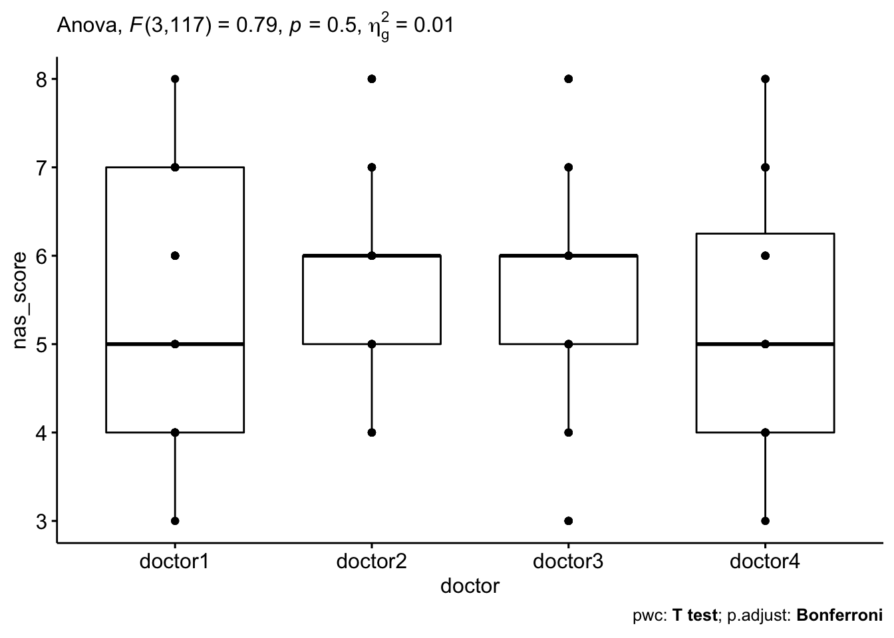

Reproducibility of NAS Score and Correlation with Steatohepatitis Diagnosis
Please note that because this is a new project that has not been published yet. The real data and results are not showed here. Pseudo data is used instead to show the analysis progress.
Background
Nonalcoholic fatty liver disease(NAFLD) is characterized by hepatic steatosis in the absence of a history of significant alcohol use or other known liver disease. Nonalcoholic steatohepatitis (NASH) is the progressive form of NAFLD.
Research Question
To investigate the interobserver reproducibility of the NAS score, and the variation between final diagnosis and NAS score, among subspecialist liver-GI pathologists at a single academic medical center.
Methods
Data Load(Generate) and Wrangling
id <- seq(1, 40, by=1)
steatosis1 <- sample.int(3, 40, replace = TRUE)
steatosis2 <- sample.int(3, 40, replace = TRUE)
steatosis3 <- sample.int(3, 40, replace = TRUE)
steatosis4 <- sample.int(3, 40, replace = TRUE)
Inflammation1 <- sample.int(3, 40, replace = TRUE)
Inflammation2 <- sample.int(3, 40, replace = TRUE)
Inflammation3 <- sample.int(3, 40, replace = TRUE)
Inflammation4 <- sample.int(3, 40, replace = TRUE)
Bollooning1 <- sample.int(2, 40, replace = TRUE)
Bollooning2 <- sample.int(2, 40, replace = TRUE)
Bollooning3 <- sample.int(2, 40, replace = TRUE)
Bollooning4 <- sample.int(2, 40, replace = TRUE)
mydata <- cbind(id, steatosis1, steatosis2, steatosis3, steatosis4, Inflammation1, Inflammation2, Inflammation3, Inflammation4, Bollooning1, Bollooning2, Bollooning3, Bollooning4) %>%
as.data.frame() %>%
janitor::clean_names() %>%
mutate(nas1 = steatosis1 + inflammation1 + bollooning1,
nas2 = steatosis2 + inflammation2 + bollooning2,
nas3 = steatosis3 + inflammation3 + bollooning3,
nas4 = steatosis4 + inflammation4 + bollooning4)
mydata_long <- mydata %>%
gather(key = "doctor", value = "nas_score", nas1, nas2, nas3, nas4) %>%
convert_as_factor(id, doctor) %>%
select(id, doctor, nas_score) %>%
distinct() %>%
mutate(doctor = as.factor(str_replace(doctor, "nas", "doctor")))Check Assumption
mydata_long %>%
group_by(doctor) %>%
identify_outliers(nas_score)## [1] doctor id nas_score is.outlier is.extreme
## <0 rows> (or 0-length row.names)mydata_long %>%
group_by(doctor) %>%
shapiro_test(nas_score)## # A tibble: 4 x 4
## doctor variable statistic p
## <fct> <chr> <dbl> <dbl>
## 1 doctor1 nas_score 0.933 0.0201
## 2 doctor2 nas_score 0.917 0.00631
## 3 doctor3 nas_score 0.933 0.0201
## 4 doctor4 nas_score 0.934 0.0211Test
res.aov <- anova_test(data = mydata_long, dv = nas_score, wid = id, within = doctor)
get_anova_table(res.aov)## ANOVA Table (type III tests)
##
## Effect DFn DFd F p p<.05 ges
## 1 doctor 3 117 1.642 0.183 0.031### pairwise comparisons
pwc <- mydata_long %>%
pairwise_t_test(
nas_score ~ doctor, paired = TRUE,
p.adjust.method = "bonferroni"
)
pwc## # A tibble: 6 x 10
## .y. group1 group2 n1 n2 statistic df p p.adj p.adj.signif
## * <chr> <chr> <chr> <int> <int> <dbl> <dbl> <dbl> <dbl> <chr>
## 1 nas_score doctor1 doctor2 40 40 0.450 39 0.655 1 ns
## 2 nas_score doctor1 doctor3 40 40 0.265 39 0.792 1 ns
## 3 nas_score doctor1 doctor4 40 40 -1.71 39 0.095 0.570 ns
## 4 nas_score doctor2 doctor3 40 40 -0.235 39 0.815 1 ns
## 5 nas_score doctor2 doctor4 40 40 -2.13 39 0.039 0.236 ns
## 6 nas_score doctor3 doctor4 40 40 -1.75 39 0.088 0.525 nsVisualization
pwc <- pwc %>% add_xy_position(x = "doctor")
bxp <- ggboxplot(mydata_long , x = "doctor", y = "nas_score", add = "point")
bxp+
labs(
subtitle = get_test_label(res.aov, detailed = TRUE),
caption = get_pwc_label(pwc)
)